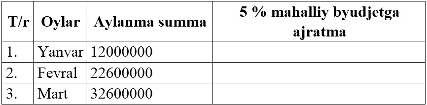

12-DARS. NAZORAT ISHI
O‘tilgan mavzulardan olingan ko‘nikmalardan foydalangan holda quyidagi masalalarni yeching, olingan natijalarni grafik ko‘rinishida tasvirlang:
1-variant
1. Jismoniy shaxslarning jamg‘arma bankiga qo‘ygan summasidan olgan foyda hisobi (ming so‘m hisobida).
2.Umumiy xarajatlar hisobi (ming so‘m hisobida).
2-variant
1. Maktab o‘qituvchilarining joriy o‘quv yili yuklamasini bajarilishi.
2. Korxona xodimlari ish haqini mahalliy koeffitsient va zararlikni inobatga olib hisoblash (ming so‘m hisobida).
3-variant
1. Tashkilot bo‘limining kvartal bo‘yicha hisoboti (ming so‘m hisobida).

2. Korxonani joriy yil oylari bo‘yicha umumiy aylanmadan mahalliy byudjetga mablag‘ o‘tkazish hisobi (ming so‘m hisobida).

4-variant
1. Maktabda “Informatika va axborot texnologiyalari” fani bo‘yicha o‘zlashtirish hisobi.
2. Firmaning joriy yilning I-kvartalda mahsulotni sotishdan olgan daromadi (ming so‘m hisobida).